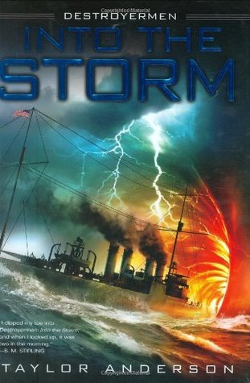

"Into the Storm"
- Read on 2019-03-07
- Rating: ️️️️️
- Format: 🎧 (16 hours 12 minutes)
An enjoyable book, with relatable characters, and an easy antagonist. The only real downside is the number of characters to keep track of. Lastly, this book had a rather unique concept, and I want to know who thinks of an idea like this for a book. In my mind, this is how the pitch played out: "Okay... hear me out... World War 2 navy... lots of boat and sailing terminology... but after going through a storm they end up in... like... a parallel world, or something like that... and there are monkey cats... or cat monkeys."
- Prior: Necronomicon
- Next: Leonardo da Vinci